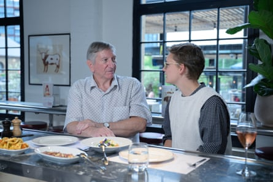
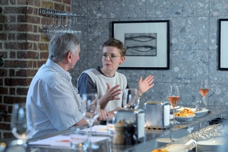
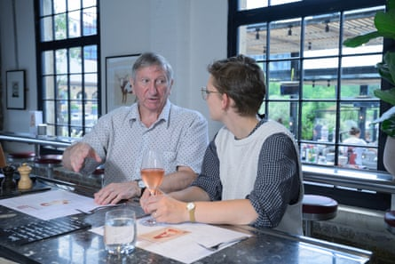
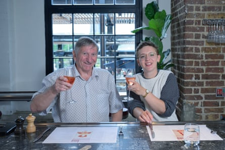

Barry, 72, Milton Keynes
Occupation Property manager
Voting record Conservative for the past 50 years
Amuse bouche Has played bass guitar since he was 19. Stopped being in a band when his drummer died in 2008, but still writes music and can play anything from pop and rock to ballads
Emily, 31, London
Occupation Curate priest
Voting record Grew up in rural Cumbria, a safe Labour seat, and raised as a Labour voter. Now votes Green
Amuse bouche Took up boxing in 2021, and finds it better to take anger out on a punchbag
For starters
Barry I had a little chuckle because I said, “I’m slightly to the right of Genghis Khan,” and she said, “I’m slightly to the left of Karl Marx.”
Emily He reminded me of my father-in-law – in a good way. He seemed very kind, and as nervous as I was.
Barry For starters, we had little thin slices of pork, and Emily wanted potatoes, which I didn’t like. The asparagus was all right.
Emily Then we had sole, I think, and an incredible baked cheesecake.
The big beef
Barry She talked a lot about people in her church. There was an Afghan man who had arrived by boat. He had three kids and a wife, and his life was possibly in danger, so he applied to the UK for asylum. He’d come all the way from Afghanistan with his family – one of them was killed on the boat. Why didn’t he stop in Italy or Greece? Does he speak English? Does his wife speak English? Just about, she says. I don’t agree with what he’s done, but what I do agree with is he’s made a decision to change his life.
Emily I was trying to share a bit of their story. They’d come to the church, and use the kitchen to cook. They showed me pictures of the food in the hotel where they were living – I wouldn’t let my dog eat it. They would break fast with us, and they’d always make enough to feed other families. I don’t know how they did it. We’d run out of excuses to say no.
Barry How many coming here are potentially gang members? We don’t know the percentage of these people who are actually criminals. They throw their papers away, but they come with an iPhone 16. How many times have you heard the stories: he says he’s 16, but he’s actually 19?
Emily The people I’d met didn’t want to raise their daughters in a country that wasn’t safe for them. They were incredibly smart and they wanted them to have an education. You know – how dare they?
Sharing plate
Barry My wife and I had 25 properties at one time, and now we’re down to 13 or 14. We’ve built that from nothing over the past 30-plus years. I told Emily there were times when we had to make a choice – do we pay the council tax or do we have Christmas? We have worked incredibly hard. Emily’s from a proper middle-class background. We are of our own creation. Where you are in life is made up by your own decisions.
Emily He spoke from a landlord’s perspective, and I countered that with the experience of being a tenant who will remain in rental for far longer than people in years gone by – how precarious it could feel. The landlord of a member of my congregation found out she was pregnant, and he issued an eviction notice. Since then, she has raised her daughter in temporary accommodation – it’s been at least five years. Barry saw that as one bad apple, rather than a systemic problem.
For afters
Barry I was annoyed that we pay tax on the income from our properties, then we sell and pay capital gains, and then, once we’re dead, our children have to pay inheritance tax on anything over £1m. I have worked my socks off, sometimes doing 14-hour days, and it is crazy all that effort I’ve made to create wealth for my children will be taxed.
Emily I was saying that his generation is much wealthier than any other, and, realistically, he can afford it. What broadened my view was realising how savvy he is about the tax system, and how much I have no idea. It didn’t change my viewpoint, but it was helpful to understand his.
Takeaways
Barry She was a very intelligent young lady – astute. We could easily become friends.
Emily I think he wanted to have a good conversation, which we did. It was really fun: I got a free dinner and I got to meet a lovely guy.
Additional reporting: Kitty Drake
Barry and Emily ate at Barrafina Kings Cross , London
Want to meet someone from across the divide? Find out how to take part